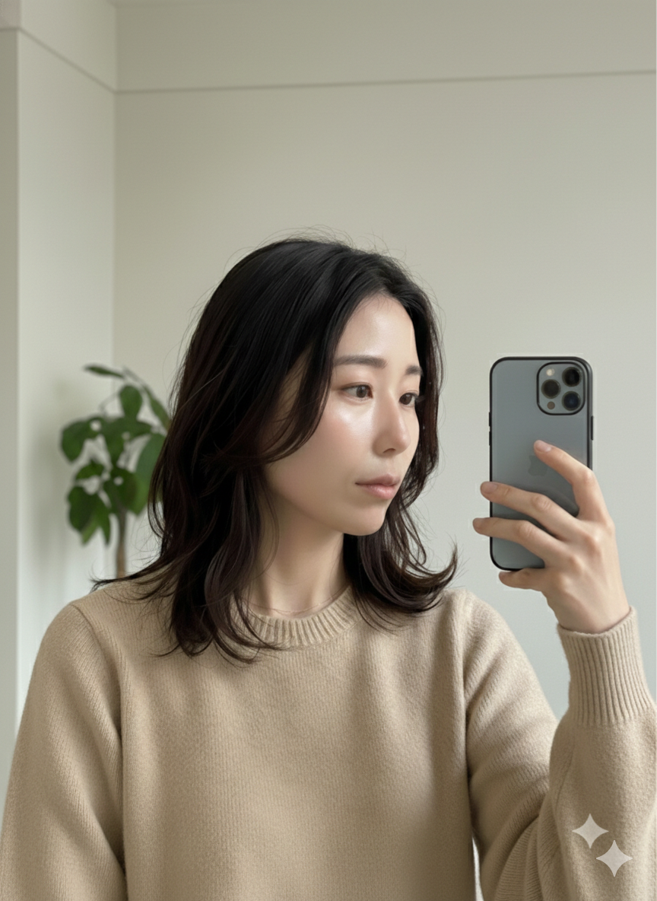
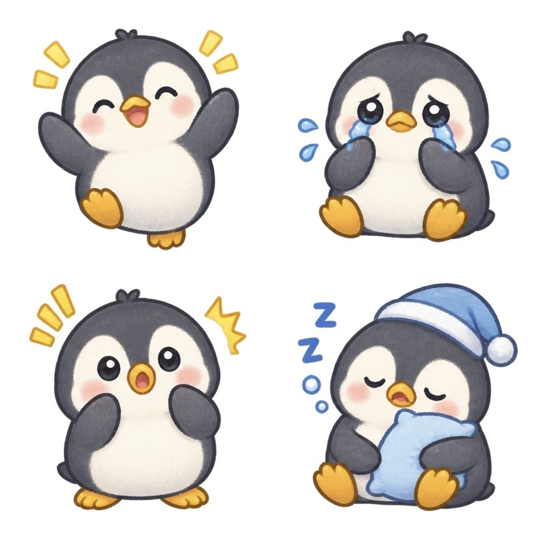
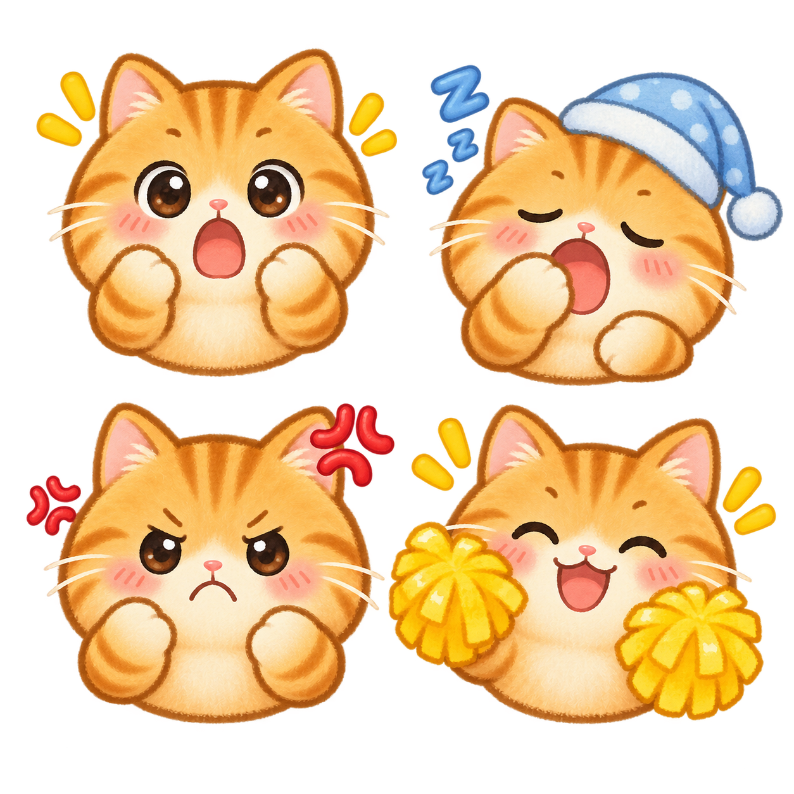
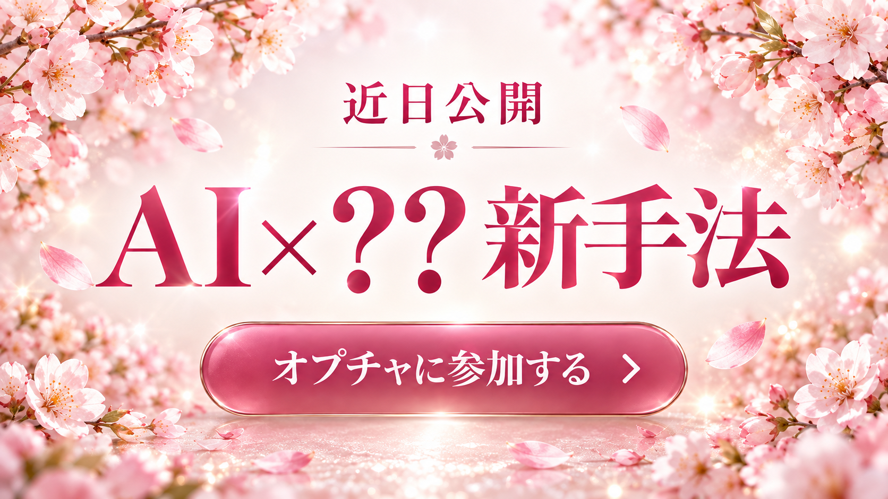

寝かしつけ後の30分vlogで話題🌙
絵心ゼロでも大丈夫。
スマホと「チャッピー」だけで売れる絵文字が作れます

LINE絵文字を作ってみたいけど、絵心が全くないから自分には無理だろうなと諦めていた
LINEスタンプは聞いたことあるけど、絵文字の作り方や需要のことはよく分からない
在宅でできる収入の柱が欲しいけど、子育て中でまとまった時間が取れない
分かります、その気持ち。
私も昔は「絵が描けない人間に絵文字なんて作れるわけがない」と思っていました。
でも今は、絵心もデザインの知識も一切いりません🌷
そのお悩み『チャッピーでLINE絵文字販売』で解決できます！
スマホと「チャッピー」「Canva」があれば、寝かしつけ後の30分だけで一つの絵文字セットが作れます✨
文字と一緒に
ポンと使える
需要の高さ
チャッピーに
一言お願い
するだけ
「作る」ハードルが、ここ最近で一気に下がりました✨
スマホ1台で完結
チャッピーもCanvaも、すべてスマホのアプリだけで操作OK。パソコンいらずで、家事や育児のスキマ時間にサクッと進められます
プロンプト1つで一瞬完成
絵心がなくても、決まった文章をコピペするだけでチャッピーが可愛いイラストを生成してくれます
一度販売すれば放置でも届く
審査を通って販売がスタートすれば、子どもと遊んでいる間も、寝ている間もコツコツ誰かに届く仕組みになります
チャッピーにプロンプトをコピペ
下のプロンプトをそのままチャッピー（ChatGPT）に貼り付けるだけ。キャラクターの種類と画風だけ自分好みに変えればOKです
💡 一度に複数枚ほしいときは「n=」を追加！
Canvaで180×180pxに整える
出来上がったイラストをCanvaで180×180pxの正方形にトリミングし、背景を透過。トークルームタブ用に96×74pxの画像も1枚用意します
LINE Creators Marketで販売申請
LINE Creators Marketでタイトル・説明文（英語必須＋日本語）を入力し画像をアップロード。AI使用の申告も忘れずに。審査を通れば販売スタートです
これだけ🌟
販売が始まれば、子どもと遊んでる間も寝てる間も、ゆとりを作ってくれる仕組みになります
① ベースキャラクター作成プロンプト
※角括弧の中(キャラクターと画風)だけ、自分の好きなものに変えてOKです🐾
② 追加バリエーション用プロンプト
プロンプトに入っている8つの感情表現
タップするだけで、その動物用のプロンプトに切り替わります
🔍 同じキャラクターに見えない…そんな時は
AIで何枚も作っていると、稀に「顔つきが少し違うかも？」という1枚が混ざることがあります。そんな時は無理に使わず、違和感のある画像だけ作り直せばOKです。
耳・目・鼻
輪郭・色・線
全体のタッチ
全部並べたときに「同じキャラクターの表情違い」に見えればOK。気に入ったイラストができたら、分かりやすい名前をつけて保存しておきましょう📱
イラストができても、そのままでは登録できません。ここでひと手間かけましょう
① 背景を透明にする
「白背景」と「透明な背景」は別物です。背景透過に対応したアプリで、画像を読み込む→背景を削除→イラストが消えていないか確認→PNGで保存、の順に進めます。
白い動物×白い背景の組み合わせは要注意。毛の輪郭まで消えてしまうことがあるので、保存前に拡大して確認しましょう
② 絵文字用のサイズに整える
180×180px
絵文字本体
(8〜16種類、それぞれPNG保存)
96×74px
トークルームタブ画像
(1番わかりやすい表情を1枚)
小さく配置しすぎると、実際のLINEでさらに小さく見えてしまうので注意です
③ 登録前の最終チェック✅
✓サイズと個数が揃っている
✓トークルームタブ画像がある
✓背景が透明・PNG形式になっている
✓小さく表示しても表情が分かる
✓並べても同じキャラクターに見える
画像の準備ができたら、いよいよ販売の申請です
📝 タイトル・説明文を入力
「何の絵文字なのか」「どんな人が使いやすいか」が伝わる内容にしておくと安心です。難しく考えなくて大丈夫🌷
🖼️ 画像をアップロード
絵文字本体とトークルームタブ画像をアップロードしたら、必ずプレビューを確認。「表情が分かりにくい」ものは申請前に直しておきましょう
🤖 AI利用を正しく申告
チャッピーで作ったイラストを使っている場合は、AI生成物についての確認項目に正直に回答しましょう。著作権や商標にも注意が必要です
🔎 審査前の最終チェック
✓有名キャラクターに似すぎていない
✓企業ロゴが入っていない
✓実在人物の顔を無断使用していない
✓文字を入れた場合は誤字がない
「○○そっくりにして」など特定のキャラクターや作家さんの絵柄に寄せる指示はNG。オリジナルとして作りましょう
🎯 審査をリクエスト
すべて確認できたら審査をリクエスト。もし修正指示(リジェクト)が来ても、指摘箇所を直せば再申請できるので大丈夫です
📣 作って終わりにしない
販売しただけで必ず売れるわけではないので、「どう知ってもらうか」も考えてみましょう
制作過程を投稿
ストーリーズで紹介
使用画面を見せる
好きな表情を質問
🔁 同じ作り方を横展開する
一度作り方を覚えれば、次からゼロから調べ直す必要はありません。動物を変えてシリーズ化できます



🌻 進める上でのコツ・注意点
AIで作ったことは
正直に申告
実在キャラの
作風マネはNG
販売エリア・
英語表記を確認
修正指示が来ても
再申請でOK
絵心がなくても、特別な道具がなくても、
チャッピーとCanva、スマホさえあれば今日から始められます。
まずは寝かしつけ後の30分、
1セット作ってみることから始めてみませんか？🌷
ここまで読んで、「LINE絵文字販売もやってみようかな」と思ったかもしれません。
でも実は…
「やり方を知っていること」と
「実際に継続して収入にできること」
は、全く別物なんです。
ここでつまずいて、諦めてしまう方がいちばん多いんです🥺
私自身、過去に自己流で副業に手を出し、
150万円ものお金を失う
という痛い経験をしています。
「私には才能がないんだ…」とお布団の中で一人泣いた夜は数え切れません。
そこから必死に試行錯誤して、ようやく「これなら子育て中の私でも続けられる」というやり方に辿り着きました。
そして今、その延長線上で今までとは違う、新しい在宅の稼ぎ方にたどり着き、近々みなさんにお伝えする準備を進めています。
私と今のあなたの違いは、才能ではありません。
「成果が出る『型』を知っていて、
失敗を避ける方法を知っているかどうか」
だけなんです。
絵文字販売みたいに「1つずつ作って売る」やり方も素敵だけど、
正直、単発の収入だけだと不安が消えないですよね。
もっと再現性が高くて、
スマホとAIだけで完結する
新しい在宅の稼ぎ方
を、実は最近見つけました。
副業選びで見るべき、5つの条件
この5つ、どれか1つでも欠けると続かなかったり、成果が出にくくなります。
そんな中、この条件をかなり満たす新しい手法を最近見つけました。
詳しい内容は、まだここではお伝えできません。
専用のオープンチャットだけで、先行公開していきます。

参加人数が増えてきたら締め切る予定なので、
気になった方はお早めにご参加ください。
解禁前の情報を、いちばん早く受け取れる場所です🌷
※オープンチャットの参加人数には上限があります。予告なく受付を終了する場合がありますので、お早めにご参加ください。